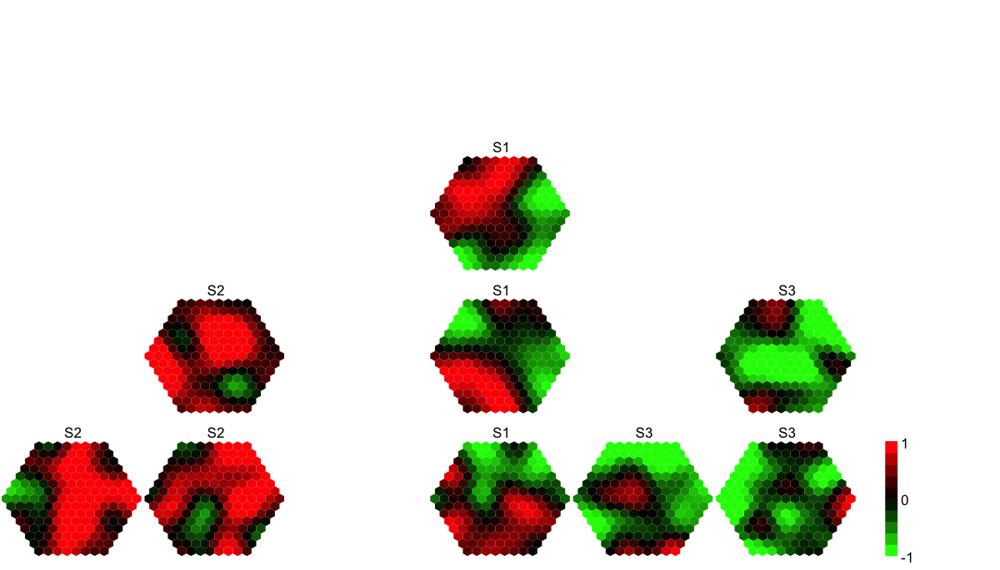

visCompReorder is supposed to visualise multiple
component planes reorded within a sheet-shape rectangle
grid
visCompReorder(sMap, sReorder, margin = rep(0.1, 4), height = 7, title.rotate = 0,
title.xy = c(0.45, 1), colormap = c("bwr", "jet", "gbr", "wyr", "br", "yr", "rainbow",
"wb"), ncolors = 40, zlim = NULL, border.color = "transparent", gp = grid::gpar())
invisible
none
# 1) generate data with an iid matrix of 1000 x 9 data <- cbind(matrix(rnorm(1000*3,mean=0,sd=1), nrow=1000, ncol=3), matrix(rnorm(1000*3,mean=0.5,sd=1), nrow=1000, ncol=3), matrix(rnorm(1000*3,mean=-0.5,sd=1), nrow=1000, ncol=3)) colnames(data) <- c("S1","S1","S1","S2","S2","S2","S3","S3","S3") # 2) sMap resulted from using by default setup sMap <- sPipeline(data=data)Start at 2014-05-27 11:55:41 First, define topology of a map grid... Second, initialise the codebook matrix given a topology and input data... Third, get training at the rough stage... Fourth, get training at the finetune stage... Next, identify the best-matching hexagon/rectangle for the input data... Finally, append the response data (hits and mqe) into the sMap object... Below are the summaries of the training results: dimension of input data: 1000x9 xy-dimension of map grid: xdim=15, ydim=15 grid lattice: hexa grid shape: suprahex dimension of grid coord: 169x2 initialisation method: linear dimension of codebook matrix: 169x9 mean quantization error: 4.23734077574819 Below are the details of trainology: training algorithm: batch alpha type: invert training neighborhood kernel: gaussian trainlength (x input data length): 2 at rough stage; 7 at finetune stage radius (at rough stage): from 4 to 1 radius (at finetune stage): from 1 to 1 End at 2014-05-27 11:55:42 Runtime in total is: 1 secs# 3) reorder component planes sReorder <- sCompReorder(sMap=sMap, amplifier=2, metric="none")Start at 2014-05-27 11:55:42 First, define topology of a map grid... Second, initialise the codebook matrix given a topology and input data... Third, get training at the rough stage... Fourth, get training at the finetune stage... Next, identify the best-matching hexagon/rectangle for the input data... Finally, append the response data (hits and mqe) into the sMap object... Below are the summaries of the training results: dimension of input data: 9x169 xy-dimension of map grid: xdim=6, ydim=3 grid lattice: rect grid shape: sheet dimension of grid coord: 18x2 initialisation method: linear dimension of codebook matrix: 18x169 mean quantization error: 31.3740925548076 Below are the details of trainology: training algorithm: sequential alpha type: invert training neighborhood kernel: gaussian trainlength (x input data length): 20 at rough stage; 80 at finetune stage radius (at rough stage): from 1 to 1 radius (at finetune stage): from 1 to 1 End at 2014-05-27 11:55:42 Runtime in total is: 0 secs# 4) visualise multiple component planes reorded within a sheet-shape rectangle grid visCompReorder(sMap=sMap, sReorder=sReorder, margin=rep(0.1,4), height=7, title.rotate=0, title.xy=c(0.45, 1), colormap="gbr", ncolors=10, zlim=c(-1,1), border.color="transparent")
visVp, visHexComp,
visColorbar, sCompReorder
Fang H, Gough J. (2014) supraHex: an R/Bioconductor package for tabular omics data analysis using a supra-hexagonal map. Biochemical and Biophysical Research Communications, 443(1), 285-289. http://dx.doi.org/10.1016/j.bbrc.2013.11.103, PMID: 24309102
){kind=link}